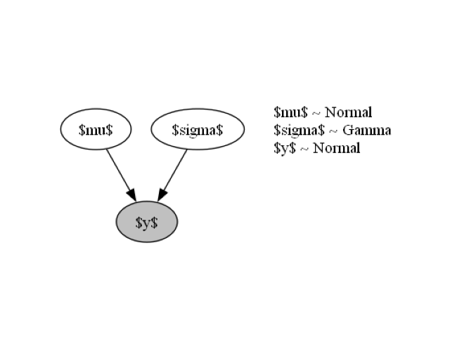
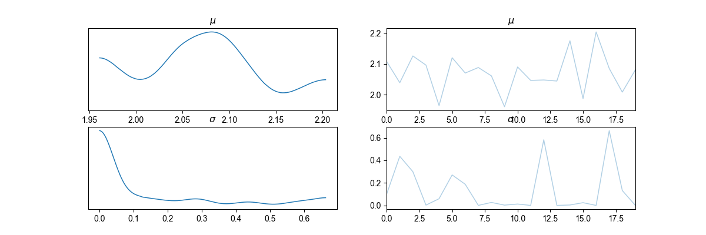
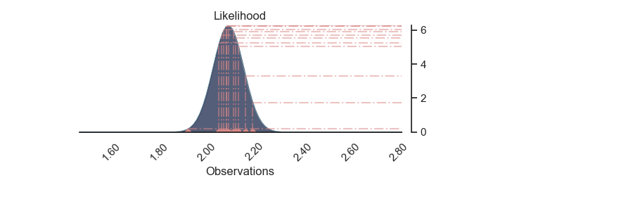
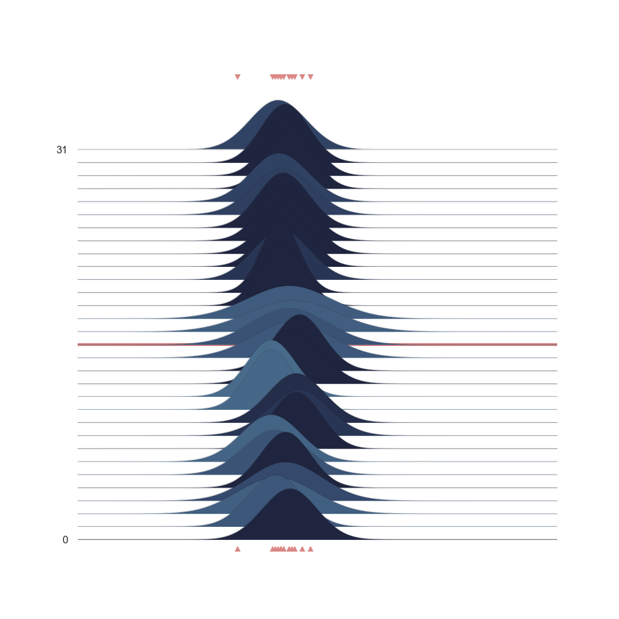
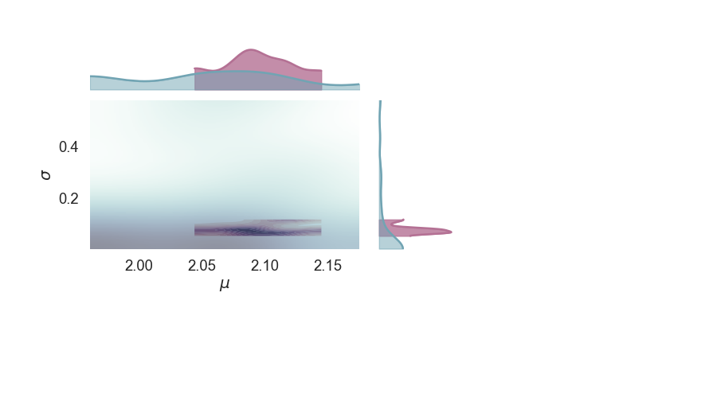

Note
Go to the end to download the full example code
Visual Scripting compiled model¶
- 
- 
- 
- 
- 
Executing: Normal
Executing: Sample
Executing: Gamma
Executing: Sample
Executing: Normal
Executing: Sample
Executing: PyroModel
Executing: VisualizeModelGraph
Executing: PriorPredictive
Executing: NUTS
Executing: MCMC
Executing: RunMCMC
Warmup: 0%| | 0/100 [00:00, ?it/s]
Warmup: 31%|████ | 31/100 [00:00, 286.49it/s, step size=2.48e-02, acc. prob=0.753]
Sample: 60%|███████▊ | 60/100 [00:00, 270.15it/s, step size=3.71e-01, acc. prob=0.917]
Sample: 100%|████████████| 100/100 [00:00, 314.77it/s, step size=3.71e-01, acc. prob=0.925]
Executing: PosteriorPredictive
Executing: ArvizObject
C:\Users\MigueldelaVarga\PycharmProjects\VisualBayesic\venv\lib\site-packages\arviz\data\io_pyro.py:157: UserWarning: Could not get vectorized trace, log_likelihood group will be omitted. Check your model vectorization or set log_likelihood=False
warnings.warn(
posterior predictive shape not compatible with number of chains and draws.This can mean that some draws or even whole chains are not represented.
Executing: PlotPrior
Executing: PlotNormalLikelihood
Setting Backend To: AvailableBackends.numpy
Executing: PlotNormalLikelihoodJoy
Executing: PlotMarginals
Finished Executing
from argparse import ArgumentParser
from xai_components.base import SubGraphExecutor
from xai_components.xai_controlflow.branches import BranchComponent
from xai_components.xai_obsolete.prob_models import VisualizeModelGraph
from xai_components.xai_plotting.probabilistic_plot import ArvizObject, PlotPrior, PlotNormalLikelihood, PlotMarginals, PlotNormalLikelihoodJoy
from xai_components.xai_probabilistic_models.probabilistic_models_I import PyroModel
from xai_components.xai_probability_distributions.probabilistic_distributions import Gamma, Uniform, Normal
from xai_components.xai_pyro.probabilistic_node import MCMC, RunMCMC, NUTS, PriorPredictive, PosteriorPredictive, Sample
def main(args):
ctx = {}
ctx['args'] = args
c_0 = Normal()
c_1 = Sample()
c_2 = PyroModel()
c_3 = VisualizeModelGraph()
c_4 = PriorPredictive()
c_5 = ArvizObject()
c_6 = PlotPrior()
c_7 = PlotNormalLikelihood()
c_8 = PlotNormalLikelihoodJoy()
c_9 = PosteriorPredictive()
c_10 = Sample()
c_11 = Gamma()
c_12 = PlotMarginals()
c_13 = Uniform()
c_14 = BranchComponent()
c_15 = Sample()
c_16 = Normal()
c_17 = Sample()
c_18 = MCMC()
c_19 = RunMCMC()
c_20 = NUTS()
c_0.mean = c_17.sample
c_0.std = c_10.sample
c_1.name.value = '$y$'
c_1.fn = c_0.fn
c_1.fn = c_0.fn
c_1.fn = c_0.fn
c_1.fn = c_0.fn
c_1.fn = c_0.fn
c_1.fn = c_0.fn
c_1.fn = c_0.fn
c_1.fn = c_0.fn
c_1.fn = c_0.fn
c_1.fn = c_0.fn
c_1.obs.value = [2.12, 2.06, 2.08, 2.05, 2.08, 2.09, 2.19, 2.07, 2.16, 2.11, 2.13, 1.92]
c_2.arg1 = c_1.sample
c_3.model_function = c_2.model
c_4.model = c_2.model
c_4.num_samples.value = 20
c_5.mcmc = c_18.mcmc
c_5.prior_predictive_values = c_4.prior
c_5.posterior_predictive_values = c_9.posterior_predictive
c_6.az_data = c_5.az_data
c_6.az_data = c_5.az_data
c_7.az_data = c_5.az_data
c_7.mean_sample_name.value = '$\\mu$'
c_7.std_sample_name.value = '$\\sigma$'
c_7.y_sample_name.value = '$y$'
c_8.az_data = c_5.az_data
c_8.mean_sample_name.value = '$\\mu$'
c_8.std_sample_name.value = '$\\sigma$'
c_8.y_sample_name.value = '$y$'
c_9.model = c_2.model
c_9.MCMC = c_18.mcmc
c_9.num_samples.value = 20
c_10.name.value = '$\\sigma$'
c_10.fn = c_11.fn
c_10.fn = c_11.fn
c_11.concentration.value = 0.3
c_11.rate.value = 3.01
c_12.az_data = c_5.az_data
c_12.sample_1_name.value = '$\\mu$'
c_12.sample_2_name.value = '$\\sigma$'
c_13.low.value = 0.0
c_13.high.value = 10.0
c_14.condition.value = True
c_15.name.value = '$\\mu$'
c_15.fn = c_13.fn
c_15.fn = c_13.fn
c_15.fn = c_13.fn
c_15.fn = c_13.fn
c_15.fn = c_13.fn
c_15.fn = c_13.fn
c_15.fn = c_13.fn
c_15.fn = c_13.fn
c_15.fn = c_13.fn
c_15.fn = c_13.fn
c_15.fn = c_13.fn
c_15.fn = c_13.fn
c_16.mean.value = 2.07
c_16.std.value = 0.07
c_17.name.value = '$\\mu$'
c_17.fn = c_16.fn
c_17.fn = c_16.fn
c_17.fn = c_16.fn
c_17.fn = c_16.fn
c_17.fn = c_16.fn
c_17.fn = c_16.fn
c_17.fn = c_16.fn
c_17.fn = c_16.fn
c_17.fn = c_16.fn
c_17.fn = c_16.fn
c_18.NUTS = c_20.NUTS
c_18.NUTS = c_20.NUTS
c_18.num_samples.value = 50
c_18.num_chains.value = 1
c_19.mcmc = c_18.mcmc
c_20.model = c_2.model
c_0.next = c_1
c_1.next = c_2
c_2.next = c_3
c_3.next = c_4
c_4.next = c_20
c_5.next = c_6
c_6.next = c_7
c_7.next = c_8
c_8.next = c_12
c_9.next = c_5
c_10.next = c_0
c_11.next = c_10
c_12.next = None
c_13.next = c_15
c_14.next = c_11
c_14.when_true = SubGraphExecutor(c_16)
c_14.when_false = SubGraphExecutor(c_13)
c_15.next = None
c_16.next = c_17
c_17.next = None
c_18.next = c_19
c_19.next = c_9
c_20.next = c_18
next_component = c_14
while next_component:
next_component = next_component.do(ctx)
if __name__ == '__main__':
parser = ArgumentParser()
main(parser.parse_args())
print('\nFinished Executing')
Total running time of the script: (0 minutes 9.945 seconds)